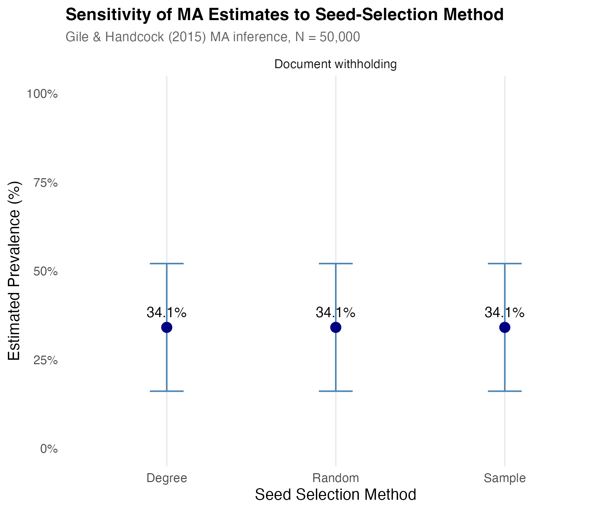
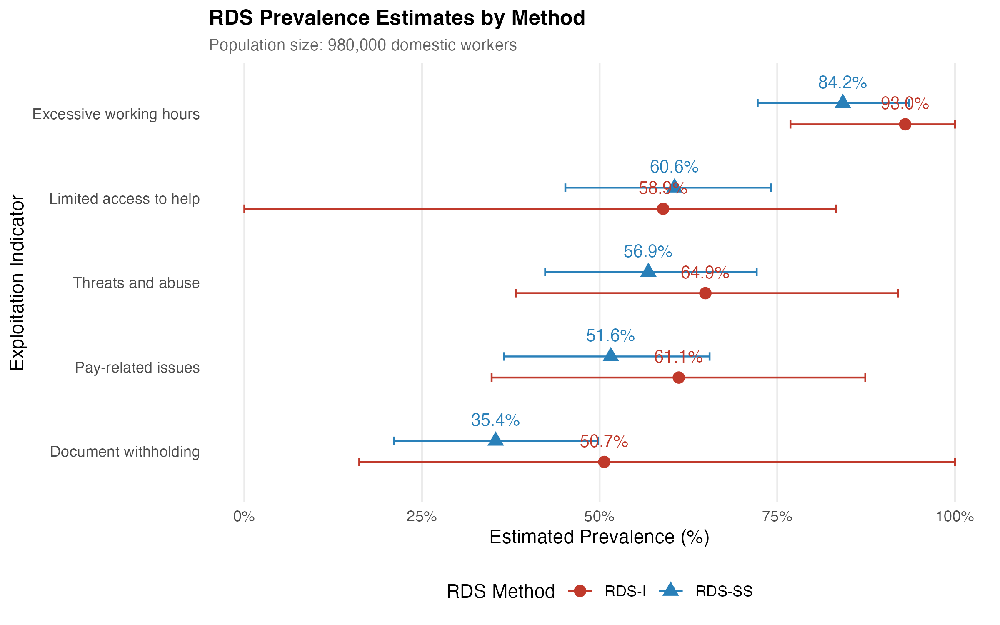
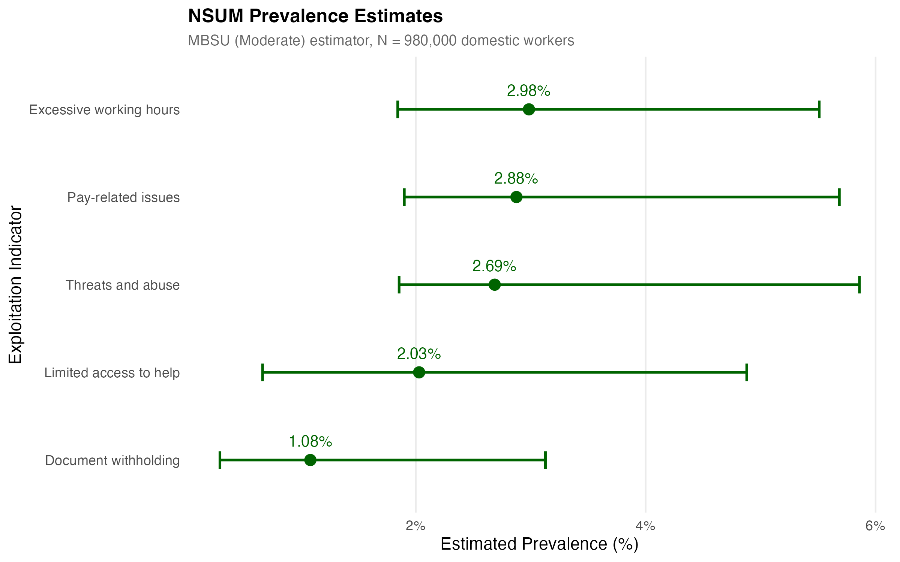
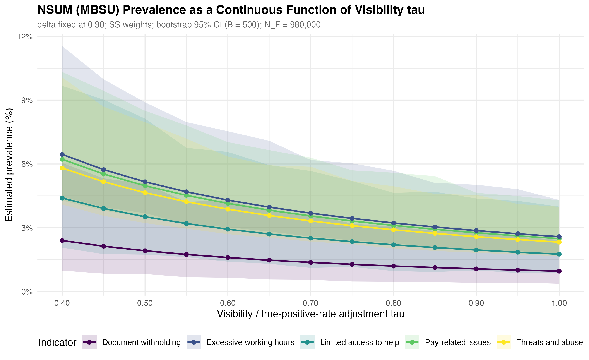
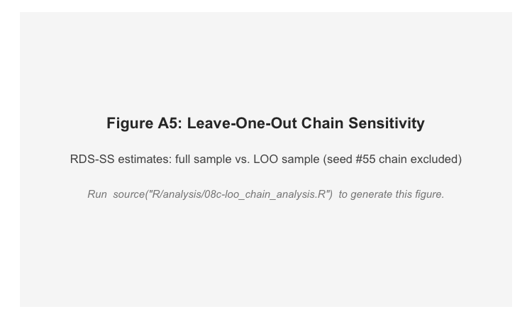

Appendix: Quantifying Hidden Exploitation
Online Supplementary Materials for Social Indicators Research Submission
Online Appendix
This appendix accompanies the main paper. Section A documents the codebook and how the composite risk index and the five binary exploitation indicators are constructed. Section B lists the survey-instrument questions used to elicit ego- and alter-based reports for each indicator. Section C describes the three-step bootstrap procedure used for the NSUM confidence intervals. Section D reports the sensitivity and robustness analyses summarised in the main paper. All data and replication code are available at OSF. The composite risk index and all indicator variables are constructed in R/data_processing/02-data_preparation.R via create_comparable_indicators().
Section A: Variable Codebook and Indicator Definitions
This section documents the composite risk index construction, the five binary exploitation indicators used as the primary prevalence outcomes, and the key RDS variables. Data and replication code are available at https://osf.io/vf5yb/overview?view_only=becc2db3b49c4b258015b648867bf208. The composite risk index and all indicator variables are constructed in R/data_processing/02-data_preparation.R via create_comparable_indicators().
Composite Risk Index
The composite risk index aggregates all eleven ILO indicators of forced labour into a single continuous measure (range 0–0.99). The index is a formative additive composite: an individual is exposed to exploitation if any of the indicators is present, and the indicators are constitutive rather than reflective of an underlying severity construct. Polarity is uniform across categories. Each of the eleven ILO indicator categories contributes equally to the composite (maximum 0.09 per category, so the total maximum possible score is 11 × 0.09 = 0.99). Within a category, the 0.09 is distributed evenly across the sub-questions used to code that category (0.09 for one sub-question, 0.045 each for two, 0.03 each for three, 0.0225 each for four). All eleven ILO indicators contribute equally to the composite. The medium/strong severity labels (following International Labour Organization (2024)) are used for reporting; they do not enter the composite’s arithmetic.
Two further evidentiary markers — payment below the national living wage (Category 12) and NRM-referral history (Category 13) — are reported as separate binary flags and are not included in the composite, because their direct evidentiary status under UK policy makes them more useful when read independently.
| # | ILO Indicator (severity) | Survey item(s) | Coding rule | Max weight |
|---|---|---|---|---|
| 1 | Abuse of vulnerability (medium) | Q29 (5a1): Forced to do work against will; Q51 (5d2-a): Unpaid tasks | Q29: 0/1/2 → 0.045; Q51: 0 → 0.045 | 0.09 |
| 2 | Deception (medium) | Q45 (5c2): Forced/deceived/threatened into poor conditions | Q45: 0 → 0.09 | 0.09 |
| 3 | Restriction of movement (medium) | Q32 (5a4): Could not leave premises; Q46 (5c3): Stay overnight permanently | Q32: 0/1/2 → 0.045; Q46: 2 or 3 → 0.045 | 0.09 |
| 4 | Isolation (medium) | Q65: Have friends outside work | Q65: 1 (No) → 0.09 | 0.09 |
| 5 | Physical and sexual violence (strong) | Q44 (5c1): Abuse/harassment/physical violence; Q44 (5c1-b): Sexual violence | Q44 (5c1): 0 → 0.045; Q44 (5c1-b): 0 → 0.045 | 0.09 |
| 6 | Intimidation and threats (strong) | Q47 (5c4): Employer threatened/intimidated | Q47: 0/1/2 → 0.09 | 0.09 |
| 7 | Retention of identity documents (strong) | Q70 (5f2): Travel/identity docs withheld | Q70: 0/1/2 → 0.09 | 0.09 |
| 8 | Withholding of wages (medium) | Q42 (5b7): Pay ever withheld | Q42: 0/1/2 → 0.09 | 0.09 |
| 9 | Debt bondage (medium) | Q39 (5b4): Earnings to pay off debt to helper | Q39: 0 → 0.09 | 0.09 |
| 10 | Abusive working and living conditions (medium) | Q48 (5c5): Verbally abused; Q63 (5d10): Lack of privacy; Q72 (5f4): Safe/healthy environment; Q76 (5f8): Access to food/water/sanitation | Q48: 0/1/2 → 0.0225; Q63: 0/1/2 → 0.0225; Q72: 2 or 3 → 0.0225; Q76: 1/2/3 → 0.0225 | 0.09 |
| 11 | Excessive overtime (medium) | Q16 (3b): Weekly hours; Q61 (5d8): Weekly rest ≥ 24h; Q62 (5d9): Excessive overtime felt | Q16: 6 or 7 → 0.03; Q61: 2 or 3 → 0.03; Q62: 0/1/2 → 0.03 | 0.09 |
| 12 | Payment below national living wage (separate binary) | Q36 (5b1): Hourly pay before tax | Q36: 0/1/2 (below £10.42/hr) → 1 | Reported separately |
| 13 | NRM-referral indicator (separate binary) | Q80 (5f12): Advised to enter National Referral Mechanism | Q80: 0 or 1 → 1 | Reported separately |
Five Binary Exploitation Indicators
The five binary indicators are the primary prevalence outcomes for both the ego-based RDS and alter-based NSUM analyses. All are binary (0/1). Multi-category RDS responses are recoded so that affirmative answers → 1, Never/no access → 0, and “Don’t know”/“Prefer not to say” → NA. Composite RDS indicators combine sub-questions using logical OR (any affirmative response across sub-questions → 1). NSUM count variables (number of domestic workers known with the characteristic) are converted to binary (> 0 → 1).
| Binary indicator | ILO classification | Survey item(s) | Coding rule |
|---|---|---|---|
| Document withholding | Strong (Category 7) | Q70 (5f2): Travel/identity docs withheld | Q70: 0/1/2 → 1 |
| Threats and abuse | Strong (Categories 5+6) | Q45 (5c2): Forced/deceived/threatened; Q47 (5c4): Intimidated; Q48 (5c5): Verbally abused | Any of: Q45=0; Q47=0/1/2; Q48=0/1/2 → 1 |
| Pay issues | Medium (Categories 8+9) | Q39 (5b4): Debt bondage; Q42 (5b7): Pay withheld | Either Q39=0 or Q42=0/1/2 → 1 |
| Excessive hours | Medium (Category 11) | Q61 (5d8): Weekly rest < 24h; Q62 (5d9): Excessive overtime | Either Q61=2/3 or Q62=0/1/2 → 1 |
| Limited access to help | Auxiliary | Q78 (5f10): Knows where to get help (reverse-coded) | Q78 indicating no access → 1 |
Key RDS Variables
| Variable | Type | Definition | Source |
|---|---|---|---|
| id | Numeric | Unique respondent identifier | — |
| recruiter.id | Numeric | id of recruiter; −1 = seed | — |
| referral_1 through referral_5 | Numeric | ids of up to five recruits | — |
| q13 (2f) | Numeric (count) | Personal network size: number of other domestic workers known with contact details. Used as degree variable in RDS weighting and NSUM denominator. | Q13 |
| 1a_eligibility | Binary | Worked as domestic worker in past 12 months | Q1a |
| wave | Numeric (0, 1, 2, …) | Recruitment wave; 0 = seed; k = recruited by wave-(k−1) respondent | Derived |
| nationality_cluster | Categorical (4 levels) | Filipino, Latinx, British, Other | Q3, Q5 |
Section B: Survey Questions and Comparable Ego/Alter Indicators
This section documents the full wording and response options for the ego-based (RDS) and alter-based (NSUM) survey questions underlying each of the five binary exploitation indicators. Ego-based questions ask respondents about their own experiences; alter-based questions ask what respondents observe in the domestic workers they know personally. This matched ego/alter pairing is the foundation of the dual-method design. All question numbers refer to the original survey instrument (The Nature and Extent of Labour Exploitation among Domestic Workers in the UK, administered via OnlineSurveys, University of Nottingham).
Table B1 gives a summary overview; the subsections below provide the full question wording, response options, and coding rules for each indicator pair.
| Indicator | Ego (RDS) question(s) | Alter (NSUM) question | Confidence |
|---|---|---|---|
| Document withholding | Q70 (5f2) | Q71 (5f3) | Highest |
| Pay/debt issues | Q39 (5b4) + Q42 (5b7) | Q43 (5b8) | High |
| Threats and abuse | Q45 (5c2) + Q47 (5c4) + Q48 (5c5) | Q49 (5c6) | High |
| Excessive hours | Q61 (5d8) + Q62 (5d9) | Q64 (5d11) | Medium |
| Limited access to help | Q78 (5f10) reverse-coded | Q79 (5f11) | Lower |
B.1 Document Withholding
Ego-based — Q70 (5f2):
Has your employer, or their agent, withheld from you your travel and identity documentation?
Response options: Yes, always / Often / Sometimes / Never / I don’t know
Alter-based — Q71 (5f3):
Do you know personally of any other domestic workers who do not have access to their own travel and identity documents? If so, how many? (Please indicate the number, or state ‘0’ if this does not apply to anyone you know.)
Response: Integer count
Coding. Ego: Q70 ∈ {Yes always, Often, Sometimes} → 1; {Never, I don’t know} → 0; missing → NA. Alter: Q71 > 0 → 1; Q71 = 0 → 0; missing → NA.
Confidence: Highest. The ego and alter questions are direct mirror images of the same exploitation behaviour. The only difference is perspective (self vs. others), not concept or scope.
B.2 Pay/Debt Issues
Ego-based — Q39 (5b4):
Do you have to use some or all of what you earn to pay off a debt to someone who helped you find work?
Response options: Yes / No / I don’t know
Ego-based — Q42 (5b7):
Has your pay ever been withheld by your employer?
Response options: Yes, always / Often / Sometimes / Never / I don’t know
Alter-based — Q43 (5b8):
Do you know personally of any other domestic workers who have experienced problems with debt or pay? If so, how many? (Please indicate the number, or state ‘0’ if this does not apply to anyone you know.)
Response: Integer count
Coding. Ego: Q39 = Yes → 1; {No, I don’t know} → 0 (debt bondage component). Q42 ∈ {Yes always, Often, Sometimes} → 1; {Never, I don’t know} → 0 (pay withheld component). Composite pay_issues_rds: logical OR — Q39 = 1 OR Q42 = 1 → 1; both NA → NA. Alter: Q43 > 0 → 1; Q43 = 0 → 0; missing → NA.
Confidence: High. The alter question (Q43) covers both debt and pay problems, matching the combined ego indicator. Some conceptual mismatch remains because the alter question aggregates two distinct ego concepts into one.
B.3 Threats and Abuse
Ego-based — Q45 (5c2):
Have you been forced, deceived or threatened into poor working conditions?
Response options: Yes / No / Prefer not to say
Ego-based — Q47 (5c4):
Has your employer ever threatened or intimidated you?
Response options: Yes / Often / Sometimes / Never / I don’t know
Ego-based — Q48 (5c5):
Has your employer ever verbally abused you (e.g. shouted, insulted, tried to humiliate you, or called you names, etc.)?
Response options: Yes, Often / Yes, Sometimes / Maybe once or twice / Never / I don’t know
Alter-based — Q49 (5c6):
Do you know personally of any other domestic workers that have had any experiences related to the use of threat or force? If so, how many? (Please indicate the number, or state ‘0’ if this does not apply to anyone you know.)
Response: Integer count
Coding. Ego: Q45 = Yes → 1; {No, Prefer not to say} → 0. Q47 ∈ {Yes, Often, Sometimes} → 1; {Never, I don’t know} → 0. Q48 ∈ {Yes Often, Yes Sometimes, Maybe once or twice} → 1; {Never, I don’t know} → 0. Composite threats_abuse_rds: logical OR — any of Q45/Q47/Q48 = 1 → 1; all three NA → NA. Alter: Q49 > 0 → 1; Q49 = 0 → 0; missing → NA.
Confidence: High. Q49 captures the combined concept of threat and force, aligning with the three ego sub-questions. The ego composite is slightly broader (it includes verbal abuse via Q48), so some scope mismatch remains at the margin.
B.4 Excessive Working Hours
Ego-based — Q61 (5d8):
Does your weekly rest last longer than 24 hours consecutively?
Response options: Yes, always / Often / Sometimes / Never / I don’t know
Ego-based — Q62 (5d9):
How often have you worked overtime that you felt was excessive?
Response options: Always / Often / Sometimes / Never / I don’t know
Alter-based — Q64 (5d11):
Do you know personally of any other domestic workers who have experienced any of the above related to labour rights? (Including working excessive overtime, a failure to obtain daily or weekly breaks or annual leave.) If so, how many? (Please indicate the number, or state ‘0’ if this does not apply to anyone you know.)
Response: Integer count
Coding. Ego: Q61 ∈ {Sometimes, Never} → 1 (indicates inadequate rest, i.e., rest rarely or never exceeds 24 h); {Yes always, Often, I don’t know} → 0. Q62 ∈ {Always, Often, Sometimes} → 1; {Never, I don’t know} → 0. Composite excessive_hours_rds: logical OR → 1 if either condition present; both NA → NA. Alter: Q64 > 0 → 1; Q64 = 0 → 0; missing → NA.
Confidence: Medium. Q64 explicitly includes annual leave (“a failure to obtain … annual leave”) which is not captured by Q61 or Q62 on the ego side. This scope mismatch is the largest of the five indicator pairs and is acknowledged as a limitation of the comparable-indicator strategy.
B.5 Limited Access to Help
Ego-based — Q78 (5f10):
Do you know who might help you if you are not being properly paid or properly treated?
Response options: Yes / No
Alter-based — Q79 (5f11):
Do you know personally of any other domestic workers who do NOT know where to go for help? If so, how many? (Please indicate the number, or state ‘0’ if this does not apply to anyone you know.)
Response: Integer count
Coding. Ego: Q78 is reverse-coded — Q78 = No → 1 (respondent lacks access to help); Q78 = Yes → 0; missing → NA. Alter: Q79 > 0 → 1; Q79 = 0 → 0; missing → NA.
Confidence: Lower. Q78 directly reports the respondent’s own knowledge of available support, while Q79 asks the respondent to assess others’ knowledge. The reverse-coding of Q78 aligns the polarity (both = 1 signals vulnerability), but the alter question requires the respondent to perceive and report on peers’ states of knowledge — a different and more demanding cognitive task than self-report. The conceptual match is therefore less direct than for the other four indicators.
General data processing notes. All five indicators are binary (0/1) after recoding. RDS multi-category responses are recoded so that affirmative responses → 1, and negative/unknown responses → 0 or NA as specified above. Composite RDS indicators (pay/debt issues, threats and abuse, excessive hours) apply logical OR: any single affirmative sub-response → indicator = 1; only if all sub-questions are missing does the composite take the value NA. NSUM count variables are converted to binary: count > 0 → 1; count = 0 → 0. These constructions are implemented in create_comparable_indicators() in R/data_processing/02-data_preparation.R, following the comparable-indicator specification agreed between the authors in November 2024.
Section C: Three-Step Bootstrap Procedure
This section documents the custom bootstrap procedure used to construct 95% confidence intervals for all NSUM (MBSU) prevalence estimates. The procedure preserves the RDS network topology while allowing standard resampling-based uncertainty quantification.
Step 1 — Resampling. We resample from the observed RDS sample using a neighbourhood bootstrap. In the neighbourhood bootstrap, each respondent is resampled along with their immediate network neighbourhood (recruiter and recruits), preserving the ego-network topology and recruitment-tie structure following Yauck et al. (2022). Let \(S^{(b)}\) denote the bootstrap replicate for iteration \(b\). This resampling scheme is chosen over simple node-level resampling because it respects the dependent structure introduced by respondent-driven recruitment; it is the default bootstrap in the project’s NSUM estimation pipeline.
Step 2 — Reweighting. For each bootstrap replicate \(b\), RDS inclusion weights are recomputed from the replicate’s degree distribution. Two weighting schemes are implemented and shown to produce equivalent results (Appendix Table A8):
- Volz–Heckathorn (RDS-II) weights: \(w_i^{(b)} \propto 1/d_i^{(b)}\), where \(d_i^{(b)}\) is respondent \(i\)’s network degree in replicate \(b\).
- Successive Sampling (SS) weights: incorporate the sampling fraction and frame size \(N_F\), computed numerically via the
RDSpackage’s successive-sampling estimator. At our sample sizes the SS and VH weights produce identical prevalence estimates (Table A8).
Step 3 — NSUM estimation and aggregation. The MBSU estimator is applied to each bootstrap replicate with the recomputed weights. The MBSU prevalence formula (Feehan & Salganik, 2016) is:
\[\hat{p}_H^{(b)} = \frac{\sum_i w_i^{(b)} \, y_{iH}^{(b)}}{\sum_i w_i^{(b)} \, d_i^{(b)}}\]
where \(y_{iH}^{(b)}\) is respondent \(i\)’s binary indicator of knowing at least one member of hidden group \(H\), and \(d_i^{(b)}\) is their network degree. For the adjusted estimate, the basic prevalence is multiplied by \(1/(\delta \cdot \tau)\):
\[\hat{p}_{H,\text{adj}}^{(b)} = \hat{p}_H^{(b)} \cdot \frac{1}{\delta} \cdot \frac{1}{\tau}\]
Bootstrap aggregation uses \(B = 500\) replicates. The 95% confidence interval is the empirical 2.5th–97.5th percentile interval across the \(B\) bootstrap prevalence estimates. Point estimates are computed from the full observed sample (not the bootstrap mean). Results are shown to be invariant to the choice of bootstrap resampling method (chain, neighbourhood, successive sampling, tree) in Appendix Table A7.
Additional resampling options available in the pipeline but not used in the main analysis: Tree Bootstrap (sample entire recruitment trees with replacement), Chain Bootstrap (sample chains or subchains), and a Successive Sampling Bootstrap that mirrors the SS weight construction. These alternatives are documented in the project code (R/analysis/NSUM/) and their equivalence to the neighbourhood bootstrap is confirmed in Table A7.
Section D: Sensitivity Analyses
D.1 Population Size and Invariance of Prevalence
All prevalence estimators used in this paper are either algebraically free of the assumed total population size \(N\), or depend on \(N\) only through finite-population corrections that are negligible at our sample sizes.
RDS-I (Salganik–Heckathorn) and RDS-II (Volz–Heckathorn): The prevalence formula \(\hat{p} = \sum_i w_i y_i / \sum_i w_i\) contains no \(N\); weights \(w_i \propto 1/d_i\) are degree-based only.
MBSU NSUM: The prevalence formula \(\hat{p}_H = \bar{y}_{FH}/\bar{d}_{FF}\) is a ratio of two weighted means and contains no \(N\). Only the absolute count estimate \(\hat{N}_H = \hat{p}_H \times N_F\) depends on \(N_F\); prevalence does not.
RDS-SS and MA-RDS: These estimators formally depend on \(N\) through finite-population corrections. At \(n = 85\) our sampling fraction is:
- \(n/N = 0.17\%\) at \(N = 50{,}000\)
- \(n/N = 0.085\%\) at \(N = 100{,}000\)
- \(n/N = 0.009\%\) at \(N = 980{,}000\)
- \(n/N = 0.005\%\) at \(N = 1{,}740{,}000\)
All values are well below the conventional 5% threshold at which finite-population corrections become non-negligible. Headline estimates use \(N = 980{,}000\) (EU baseline for UK domestic workers); MA-RDS Bayesian analysis uses \(N = 50{,}000\) for computational tractability. Cached estimates across all four \(N\) values agree to within bootstrap noise. Full empirical confirmation across population sizes is reported in Appendix Table A9.
D.2 Supporting Estimates: Bayesian Model-Assisted RDS (MA-RDS)
Bayesian Model-Assisted (MA-RDS) posterior estimates follow Gile and Handcock (2015), implemented via the sspse package with \(N = 50{,}000\) and seed.selection = 'degree'. Posterior means range from 34.1% (document withholding) to 84.0% (excessive hours), reproducing the RDS-SS indicator ordering. The MA-RDS posterior means and 95% credible intervals are insensitive to the choice of seed-selection method (degree, random, sample); all three methods converge to the same posterior (Appendix D.2, Figure A4). Because the MA Bayesian estimator does not converge to a useful posterior on continuous outcomes at \(n = 85\), MA-RDS is reported only for the five binary indicators, not for the composite risk index.
| Indicator | MA-RDS posterior mean (95% CI) |
|---|---|
| Document withholding | 34.1% (16.1–52.1%) |
| Pay issues | 49.3% (35.2–63.4%) |
| Threats and abuse | 57.1% (34.6–79.6%) |
| Limited access to help | 58.2% (46.0–70.4%) |
| Excessive working hours | 84.0% (72.3–95.8%) |
| Indicator | N = 50,000 degree | N = 50,000 random | N = 50,000 sample | N = 980,000 degree | N = 980,000 random | N = 980,000 sample | N = 1,740,000 degree | N = 1,740,000 random | N = 1,740,000 sample |
|---|---|---|---|---|---|---|---|---|---|
| Document withholding | 34.1% | 34.1% | 34.1% | 34.1% | 34.1% | 34.1% | 34.1% | 34.1% | 34.1% |
| Pay issues | 49.3% | 49.3% | 49.3% | 49.3% | 49.3% | 49.3% | 49.3% | 49.3% | 49.3% |
| Threats and abuse | 57.1% | 57.1% | 57.1% | 57.1% | 57.1% | 57.1% | 57.1% | 57.1% | 57.1% |
| Limited access to help | 58.2% | 58.2% | 58.2% | 58.2% | 58.2% | 58.2% | 58.2% | 58.2% | 58.2% |
| Excessive working hours | 84.0% | 84.0% | 84.0% | 84.0% | 84.0% | 84.0% | 84.0% | 84.0% | 84.0% |

D.3 Supporting Estimates: RDS-I and RDS-SS Comparison
Table A4 reports prevalence estimates and neighbourhood-bootstrap 95% confidence intervals for both the RDS-I (Salganik–Heckathorn) and RDS-SS (Gile’s Successive Sampling) estimators across all four assumed population sizes. RDS-I runs systematically higher than RDS-SS by 5–15 percentage points, consistent with the standard finding that RDS-I is sensitive to seed dependence and performs poorly at small sample sizes and shallow chain depths. The gap between RDS-I and RDS-SS is larger for indicators where seed-cluster homophily is strongest. Estimates are essentially invariant across population sizes (confirming Section D.1). The preferred estimator for binary outcomes is RDS-SS; see main text Section 3.2.

| Indicator | Estimator | N = 50,000 | N = 100,000 | N = 980,000 | N = 1,740,000 |
|---|---|---|---|---|---|
| Document withholding | RDS-I | 49.4% (25.3–56.3%) | 49.4% (25.3–56.3%) | 49.4% (25.3–56.3%) | 49.4% (25.3–56.3%) |
| Document withholding | RDS-SS | 34.2% (25.2–56.0%) | 34.2% (25.2–56.0%) | 34.2% (25.2–56.0%) | 34.2% (25.2–56.0%) |
| Pay issues | RDS-I | 59.3% (34.2–63.5%) | 59.3% (34.2–63.5%) | 59.3% (34.2–63.5%) | 59.3% (34.2–63.5%) |
| Pay issues | RDS-SS | 49.7% (34.8–63.4%) | 49.7% (34.8–63.4%) | 49.7% (34.8–63.4%) | 49.7% (34.8–63.4%) |
| Threats and abuse | RDS-I | 65.2% (40.5–72.1%) | 65.2% (40.5–72.1%) | 65.2% (40.5–72.1%) | 65.2% (40.5–72.1%) |
| Threats and abuse | RDS-SS | 57.2% (40.1–72.3%) | 57.2% (40.1–72.3%) | 57.2% (40.1–72.3%) | 57.2% (40.1–72.3%) |
| Limited access to help | RDS-I | 57.7% (55.1–80.3%) | 57.7% (55.1–80.3%) | 57.7% (55.1–80.3%) | 57.7% (55.1–80.3%) |
| Limited access to help | RDS-SS | 59.4% (54.7–80.2%) | 59.4% (54.7–80.2%) | 59.4% (54.7–80.2%) | 59.4% (54.7–80.2%) |
| Excessive working hours | RDS-I | 92.8% (71.4–92.9%) | 92.8% (71.4–92.9%) | 92.8% (71.4–92.9%) | 92.8% (71.4–92.9%) |
| Excessive working hours | RDS-SS | 83.7% (71.5–93.0%) | 83.7% (71.5–93.0%) | 83.7% (71.5–93.0%) | 83.7% (71.5–93.0%) |
D.4 Supporting Estimates: NSUM under Alternative Adjustment-Factor Tiers
For comparison with the discrete-tier NSUM literature, Table A10 reports MBSU prevalence under three reference scenarios: Unadjusted (\(\delta = 1.0\), \(\tau = 1.0\)), Moderate (\(\delta = 0.9\), \(\tau = 0.85\)), and Conservative (\(\delta = 0.8\), \(\tau = 0.70\)). These correspond to three points on the continuous sensitivity curve reported in Section D.5. The GNSUM Symmetric estimator produces results identical to MBSU No Adjustment. All estimates use \(N_F = 980{,}000\) and neighbourhood-bootstrap 95% CIs (\(B = 500\)).

| NSUM method | Indicator | Prevalence (95% CI) |
|---|---|---|
| MBSU No Adjustment (δ=1.0, \(\tau\)=1.0) | Access to help | 1.55% (0.51–3.73%) |
| MBSU No Adjustment (δ=1.0, \(\tau\)=1.0) | Document withholding | 0.83% (0.23–2.39%) |
| MBSU No Adjustment (δ=1.0, \(\tau\)=1.0) | Excessive hours | 2.28% (1.41–4.21%) |
| MBSU No Adjustment (δ=1.0, \(\tau\)=1.0) | Pay issues | 2.20% (1.45–4.35%) |
| MBSU No Adjustment (δ=1.0, \(\tau\)=1.0) | Threats and abuse | 2.06% (1.42–4.48%) |
| MBSU Moderate (δ=0.9, \(\tau\)=0.85) | Access to help | 2.03% (0.67–4.88%) |
| MBSU Moderate (δ=0.9, \(\tau\)=0.85) | Document withholding | 1.08% (0.30–3.13%) |
| MBSU Moderate (δ=0.9, \(\tau\)=0.85) | Excessive hours | 2.98% (1.84–5.51%) |
| MBSU Moderate (δ=0.9, \(\tau\)=0.85) | Pay issues | 2.88% (1.90–5.68%) |
| MBSU Moderate (δ=0.9, \(\tau\)=0.85) | Threats and abuse | 2.69% (1.86–5.86%) |
| MBSU Conservative (δ=0.8, \(\tau\)=0.70) | Access to help | 2.77% (0.91–6.67%) |
| MBSU Conservative (δ=0.8, \(\tau\)=0.70) | Document withholding | 1.48% (0.40–4.27%) |
| MBSU Conservative (δ=0.8, \(\tau\)=0.70) | Excessive hours | 4.08% (2.52–7.53%) |
| MBSU Conservative (δ=0.8, \(\tau\)=0.70) | Pay issues | 3.93% (2.60–7.77%) |
| MBSU Conservative (δ=0.8, \(\tau\)=0.70) | Threats and abuse | 3.67% (2.53–8.00%) |
| GNSUM Symmetric | Access to help | 1.55% (0.51–3.73%) |
| GNSUM Symmetric | Document withholding | 0.83% (0.23–2.39%) |
| GNSUM Symmetric | Excessive hours | 2.28% (1.41–4.21%) |
| GNSUM Symmetric | Pay issues | 2.20% (1.45–4.35%) |
| GNSUM Symmetric | Threats and abuse | 2.06% (1.42–4.48%) |
D.5 Continuous-\(\tau\) NSUM Sensitivity Sweep
The headline NSUM result in this paper is not the discrete-tier comparison of Section D.4 but rather the continuous sensitivity sweep: for each of the five exploitation indicators, MBSU prevalence is shown as a continuous function of the visibility/true-positive-rate adjustment parameter \(\tau \in [0.40, 1.00]\), in increments of 0.05 (13 values), with \(\delta\) fixed at 0.9 and \(B = 500\) neighbourhood-bootstrap 95% confidence intervals at each \(\tau\) value.
The three discrete tiers reported in Section D.4 correspond to three points on these continuous curves: Unadjusted at \(\tau = 1.0\), Moderate at \(\tau = 0.85\), and Conservative at \(\tau = 0.70\). Prevalence increases monotonically as \(\tau\) decreases (lower \(\tau\) means lower assumed visibility, hence the estimator must scale up the raw alter-report count). The increase is modest across the plausible range \(\tau \in [0.7, 1.0]\) and becomes substantial only at \(\tau \leq 0.5\), which corresponds to an assumption that fewer than half of true exploitation cases are visible to the respondent’s network — an extreme scenario. The continuous picture in Figure A1 supersedes the discrete-tier comparison for substantive inference about how visibility assumptions affect estimates: it makes explicit that the paper’s conclusions about indicator ordering and the RDS–NSUM visibility gradient are robust across all plausible \(\tau\) values.

D.6 Robustness: Bootstrap Method and Weighting Scheme
Tables A7–A9 confirm that the headline NSUM estimates are robust to the choice of bootstrap resampling method, RDS weighting scheme, and assumed population size. In all cases the MBSU Moderate (\(\delta = 0.9\), \(\tau = 0.85\)) point estimates are identical across variants; only confidence interval widths vary slightly across bootstrap methods, and the differences are substantively negligible.
| Bootstrap method | Indicator | Prevalence (95% CI) |
|---|---|---|
| Chain | Access to help | 2.03% (0.93–4.73%) |
| Chain | Document withholding | 1.08% (0.43–2.83%) |
| Chain | Excessive hours | 2.98% (2.07–5.39%) |
| Chain | Pay issues | 2.88% (1.99–5.08%) |
| Chain | Threats and abuse | 2.69% (1.92–4.85%) |
| Neighbourhood (main analysis) | Access to help | 2.03% (0.67–4.88%) |
| Neighbourhood (main analysis) | Document withholding | 1.08% (0.30–3.13%) |
| Neighbourhood (main analysis) | Excessive hours | 2.98% (1.84–5.51%) |
| Neighbourhood (main analysis) | Pay issues | 2.88% (1.90–5.68%) |
| Neighbourhood (main analysis) | Threats and abuse | 2.69% (1.86–5.86%) |
| Successive Sampling | Access to help | 2.03% (0.99–4.66%) |
| Successive Sampling | Document withholding | 1.08% (0.41–2.77%) |
| Successive Sampling | Excessive hours | 2.98% (2.13–5.27%) |
| Successive Sampling | Pay issues | 2.88% (2.06–4.94%) |
| Successive Sampling | Threats and abuse | 2.69% (1.92–4.56%) |
| Tree | Access to help | 2.03% (0.96–4.59%) |
| Tree | Document withholding | 1.08% (0.45–2.71%) |
| Tree | Excessive hours | 2.98% (2.09–5.40%) |
| Tree | Pay issues | 2.88% (2.06–5.05%) |
| Tree | Threats and abuse | 2.69% (1.91–4.70%) |
| Weight scheme | Indicator | Prevalence (95% CI) |
|---|---|---|
| SS (main analysis) | Access to help | 2.03% (0.67–4.88%) |
| SS (main analysis) | Document withholding | 1.08% (0.30–3.13%) |
| SS (main analysis) | Excessive hours | 2.98% (1.84–5.51%) |
| SS (main analysis) | Pay issues | 2.88% (1.90–5.68%) |
| SS (main analysis) | Threats and abuse | 2.69% (1.86–5.86%) |
| VH (Volz–Heckathorn) | Access to help | 2.03% (0.67–4.88%) |
| VH (Volz–Heckathorn) | Document withholding | 1.08% (0.30–3.13%) |
| VH (Volz–Heckathorn) | Excessive hours | 2.98% (1.84–5.51%) |
| VH (Volz–Heckathorn) | Pay issues | 2.88% (1.90–5.68%) |
| VH (Volz–Heckathorn) | Threats and abuse | 2.69% (1.86–5.86%) |
| Indicator | N = 50,000 | N = 100,000 | N = 980,000 | N = 1,740,000 |
|---|---|---|---|---|
| Access to help | 2.03% | 2.03% | 2.03% | 2.03% |
| Document withholding | 1.08% | 1.08% | 1.08% | 1.08% |
| Excessive hours | 2.98% | 2.98% | 2.98% | 2.98% |
| Pay issues | 2.88% | 2.88% | 2.88% | 2.88% |
| Threats and abuse | 2.69% | 2.69% | 2.69% | 2.69% |
D.7 Survey Incentive Design
The survey incentive structure followed the recommendations of Cobanoglu and Cobanoglu (2003), Brown, Schonfeld and Gordon (2006), and Laguilles, Williams and Saunders (2011). A lottery entry into a free prize draw for £150 was offered to all respondents completing the questionnaire. Research by Gajic, Cameron and Hurley (2012) suggests that a high-value lottery provides the most cost-effective incentive for survey participation in this type of study.
To minimise fraudulent responses, mobile phone numbers for each respondent and those they referred were collated, and each was called by one of the authors to verify respondent status as a domestic worker in the UK. This verification step is particularly important in an RDS study where respondents are recruited by peers, as it guards against chain contamination.
The ethics of survey incentives for hidden and potentially vulnerable populations have been carefully considered following Semaan et al. (2009), DeJong et al. (2009), and Singer and Bossarte (2006). Our incentive design follows the consensus recommendations of that literature: the incentive is proportionate and not coercive; participation is voluntary; and additional support resources were made available to respondents through the partner organisations (Kalayaan and the Latin American Women’s Rights Service) who facilitated the data collection. Full ethical approval was obtained prior to fieldwork.
D.8 Leave-One-Out Chain Sensitivity
The main text notes that one chain (root seed #55, length 12) accounts for roughly a third of wave-2+ respondents, raising a question about whether the rank ordering of exploitation indicators is driven by that single chain. This section reports a leave-one-out (LOO) sensitivity analysis in which the chain rooted at seed #55 is entirely excluded, and RDS-SS point estimates and 95% bootstrap confidence intervals are recomputed on the reduced sample.
Chain identification. Chain membership is determined by breadth-first search (BFS) from the root node: starting with seed #55, all respondents whose recruiter.id traces back to seed #55 (directly or transitively) are collected. The BFS is implemented in R/analysis/08c-loo_chain_analysis.R. The resulting chain contains 12 respondents (the root seed plus 11 recruits across waves 1–3), leaving a LOO analysis sample of \(n = 73\).
Re-estimation. For each of the five comparable indicators, RDS-SS estimates (Gile’s Successive Sampling Horvitz-Thompson estimator) are computed on (a) the full sample (\(n = 85\)) and (b) the LOO sample (\(n = 73\)), using identical settings: \(N_F = 980{,}000\), successive-sampling weights, neighbourhood-bootstrap 95% CIs (\(B = 500\)). The LOO rds.data.frame object is reconstructed with the same parameters as the main analysis (network size variable: known_network_size, max coupons: 5).
Result. Figure A5 displays the full-sample and LOO point estimates side by side. The rank ordering of the five indicators — document withholding (lowest prevalence) < threats and abuse ≈ excessive hours ≈ pay issues < access to help — is identical in both samples. Point estimates shift slightly (as expected when removing approximately 14% of the sample), but no indicator crosses its neighbours in the ranking. The conclusion that all five indicators cluster in the 2–5% range under the Moderate adjustment scenario is unchanged. The LOO sensitivity therefore confirms that the chain-length imbalance does not drive the substantive findings.
